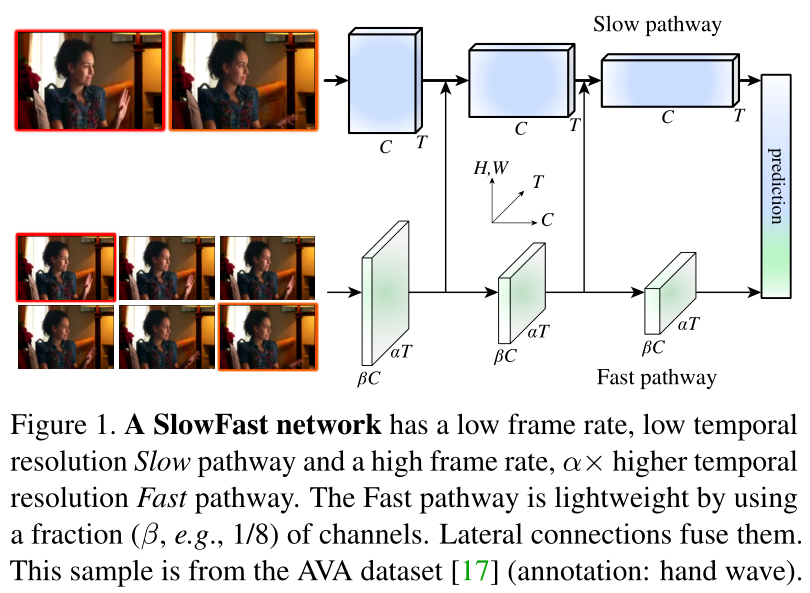
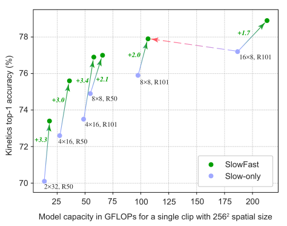
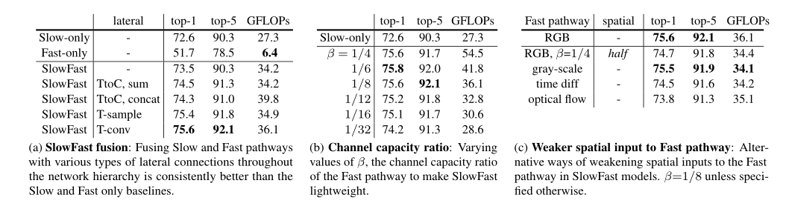

SlowFast Networks for Video Recognition
概述
提出了一种快慢结合的网络SlowFast来用于视频分类。提出对运动维度（时间维度）和空间维度分而治之的思想。
灵感来源：
- 空间语义信息是变化缓慢的。比如，挥手不会改变“手”的类别；一个人从步行转为跑步，也总是处于“人”的类别。因此，对分类语义（以及它们的颜色、纹理、光照等）的识别可以低帧率地刷新。
- 但对于正在执行的动作，可以比其主体身份更快地发展，例如拍手，挥手，摇晃，行走或跳跃。所以采用高帧率来有效地模拟可能快速变化的运动。
模型分为两路：
- 一路为Slow网络，输入为低帧率，用来捕获空间语义信息。
- 一路为Fast网络，输入为高帧率，用来捕获运动信息。
最终两条路径通过横向连接来融合。
网络

1. Slow路径
输入为低帧率，用来捕获空间语义信息。
对于一个视频片段，Slow网络每隔 帧（默认=16）采样一帧作为输入。假定该网络的输入为T 帧，则该视频片段的长度为
T 。
2. Fast路径
对比Slow路径，有两个重要参数α和β。
高帧率：Fast网络相比于Slow网络，处理高帧率的信息，则每
帧采样一帧作为输入，也就是输入为
帧。 （
=8 默认)
高分辨率的时序特征：不进行时间的降采样。（始终保持高帧率）
轻量级：相比于Slow网络，通道数只是它的
倍（
虽然Fast是高帧率的，但它却是轻量的（只占总计算量的20%），因为Fast路径只专注于时序信息，减少了通道数，牺牲了处理空间信息的能力。而空间信息可以由slow路径提供。
3. 横向连接
两条路径需要进行融合，通过横向连接来实现这一点。因为两路具有不同的时间维度，因此横向连接进行尺寸匹配。
使用单向连接将Fast路径的特征融合到Slow通路中（实验表明双向融合并没有什么提升）。
最后，对每个路径的输出进行全局平局池化，合并后接一个全连接层用来分类。
实验
在四个数据集(Kinetics400 、Kinetics600 、AVA、Charades )上都取得了最好的结果。
消融实验


和two-stream网络的比较
two-stream模型也是双流设计，但它针对的是相同的帧率。
two-stream的两个流采用相同的主干结构，而SlowFast两条路中的Fast路径更轻。
- SlowFast方法不计算光流，模型是从原始数据端到端学习的。
- 本文的实验表明SlowFast 网络更有效，在四个数据集(Kinetics400 、Kinetics600 、AVA、Charades )上都实现了最高的水准。
小结
- 在时间维度上更好地处理运动信息，是一个重点研究问题。
- 有没有时序动作定位论文用这个网络来提取特征？